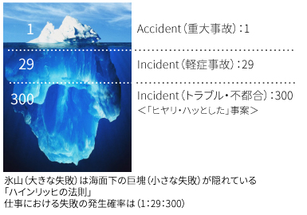

サービスのご案内
今や建物は創造の時代から、維持・管理の時代へとシフトチェンジしており、建物とより長くよりうまく付き合っていくことが重要な課題とされています。また、東日本大震災をきっかけとしたエネルギー環境の見直しやBCP（business continuity plan：事業継続計画）への取り組み、さらには緊急輸送道路沿道の建築物耐震診断義務化など、今まさに建物運営を取り巻く環境がめまぐるしく変化している最中です。
このような中で健全な建物運営体制を構築し建物を長く維持してくためには、まず対象となる建物の正確な現状把握から始まるということは言うまでもなく、そのためには様々な角度から調査し的確に診断することが大変重要となります。
そしてこれがその場しのぎではない将来を見据えた建物維持管理の原点となるのです。
そこで、今回クロニクル建設からは建物維持管理にお役立ていただける調査・診断の内容を簡単にご紹介させていただきます。
建物運営リスクの把握
経年に伴う劣化・陳腐化、耐震性、コンプライアンス（法令順守）、省エネなどは「建物運営リスク」として挙げられ、これらに対応するためには、建物の健全な維持管理は当然必要となり、これが不十分であると建物はデットストック化してしまい、テナント誘致や集客に影響を与えることになってしまいます。
建物が今どのような状態にあるのか？今後どのような対策や費用が必要になってくるのか？劣化診断や耐震診断などを実施することにより、建物運営リスクを事前に把握・対応することで、より健全な建物管理が可能となります。
リスク・危機への考え方
建物が今どのような状態にあるのか？今後どのような対策や費用が必要になってくるのか？劣化診断や耐震診断などを実施することにより、建物運営リスクを事前に把握・対応することで、より健全な建物管理が可能となります。
右の図は「ハインリッヒの法則」を表したものです。1つの重大事故には29の軽症事故があり、さらに下層には300ものトラブル・不都合があるというものです。
重大事故を未然に防ぐためには、下層に潜むトラブル・不都合をいち早く把握し、保全対応することが大変重要となるのです。
クロニクル建設が緊急度が高い不具合や予防保全措置が望まれる事象を調査し、オーナー様の建物の状況を診断いたします。
弊社の報告内容を今後の建物運営にご活用ください。
建物総合診断のクロニクル建設とは
クロニクル建設はこれまで2000棟をゆうに超える日本国中の建物を調査・診断してまいりました。マンションや事務所ビルをはじめ、大型商業施設やホテルなど、様々な建物に対してお客様のニーズに応えています。また、耐震診断、法定点検など、お客様からのどのようなご要望にもこたえられるよう人材を配しております。
募集職種：施工管理
応募資格：
建築士・施工管理技士等の有資格者、実務経験者積極採用
（未経験・見習い：応相談）
募集人員： 若干名
休日・休暇：
完全週休二日制（土・日）、祝日、年末年始
勤務時間：10：00-19：00
給与：応相談
※経験・スキルなどに応じ、優遇します。
応募方法：
履歴書・職務経歴書を下記までお送り下さい。
〒100-0005
東京都千代田区丸の内2-3-2
郵船ビルディング2F
株式会社クロニクル建設 人事部宛
人事担当:proposaiyo@propolife.co.jp
選考後、面接させていただく方にはこちらからご連絡いたします。